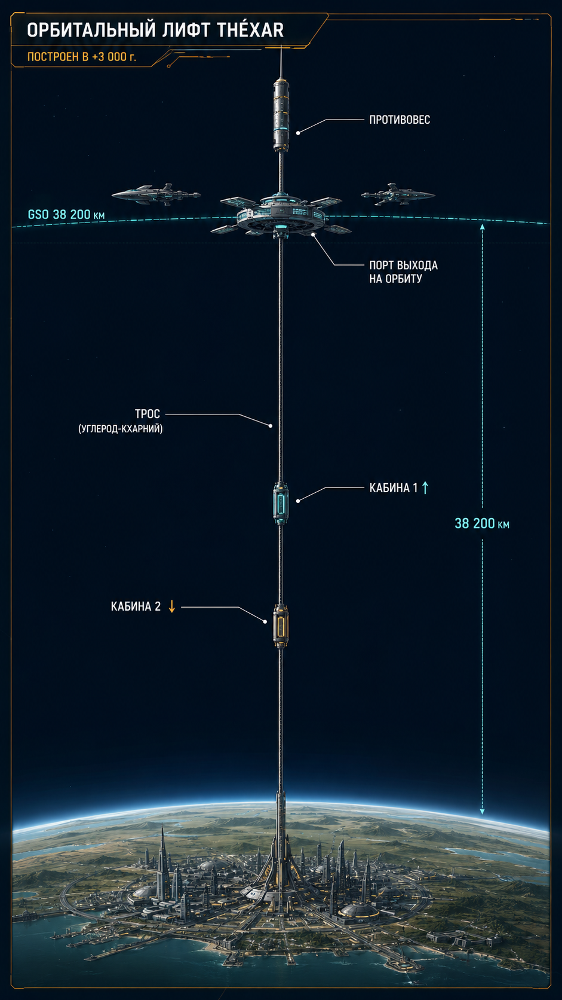

Глава 9: Технологии Xha'Ruun
«Мы не летаем быстрее света. Мы не воскрешаем мёртвых. Мы не читаем мысли. Но мы научились зажигать звезду в реакторе, строить мосты в небо и говорить через всю систему. Достаточно ли этого? Пока — да.» — Инженер-термоядерщик Тхар-Век-Ша, «Энергия и цивилизация», Эра Единства
Связанные разделы: → см. [Гл.01, «Фундаментальные ограничения»], → см. [Гл.02, «Звёздная система»], → см. [Гл.07, «История»] Объём: 55 страниц
Введение
Технологический уровень цивилизации Xha'Ruun можно охарактеризовать как ~0.78 по шкале Кардашёва — они находятся на стадии перехода от планетарной к звёздной цивилизации. Они овладели термоядерным синтезом, построили орбитальный лифт, колонизировали ближайшие тела системы Khar'Vex — но всё ещё depend on своей родной планеты для большинства ресурсов.
Ключевая особенность технологического развития Xha'Ruun — принятие фундаментальных ограничений. Сверхсветовые двигатели, путешествия во времени, полноценный искусственный интеллект — всё это признано физически или этически невозможным. Технологии Xha'Ruun развиваются не вширь (нарушая законы физики), а вглубь (максимально эффективно используя то, что разрешено).
9.1 Энергетика
9.1.1 Структура энергобаланса
ТАБЛИЦА 9.1: Энергобаланс Théxar (4 028 г. Э.Е.)
Источник Мощность (ГВт) Доля Особенности Термояд (управляемый) 9 700 62% Доминирующий источник Гелиоэнергия 3 200 20% Дополнительный Гидроэлектростанции 1 400 9% Реки Kharak, Rhuval Геотермальная 780 5% Вулканические зоны Ветровая 630 4% Прибрежные зоны Итого: 15 710 100% —
9.1.2 Термоядерный синтез
КЛЮЧЕВОЙ ФАКТ
Управляемый термоядерный синтез был впервые продемонстрирован в +1 420 г. цив. — спустя 940 лет после основания Совета Единства. Задержка связана с медленным восстановлением после Эпохи Кризиса.
Типы реакторов:
| Тип | Топливо | T плазмы | Статус | Применение |
|---|---|---|---|---|
| Токамак (Thar-Vek) | D + T (³H) | 81.6 млн °X | Промышленный (+1 420) | Стационарные станции |
| Стелларатор (Khel-Thar) | D + ³He | 108.7 млн °X | Промышленный (+2 100) | Компактные реакторы |
| Лазерный синтез (Khar-Thar) | D + D | 163.1 млн °X | Экспериментальный | Перспективный |

Рис. 9.1. Схема управляемого термоядерного реактора (токамак, Thar-Vek): магнитное удержание плазмы (D+T) при 81.6 млн °X, тороидальные катушки, вакуумная камера, бланкет (Li), поток энергии — ART-000010.
Топливная база:
- Дейтерий: в изобилии (→ см. [Гл.01, «Нуклеосинтез»]) — концентрация 3.2×
- Тритий: нарабатывается в реакторах из лития-6 (запасы лития на Théxar значительны)
- Гелий-3: добывается с поверхности спутника Thel, а также синтезируется в реакторах
9.1.3 Гелиоэнергетика
Из-за более низкой инсоляции (→ см. [Гл.02, «Khar'Vex»]) гелиопанели на Théxar занимают бо́льшие площади. Однако высокая эффективность хромофилловых фотоэлементов (→ см. [Гл.04, «Фотосинтез»]) частично компенсирует это.
9.2 Материаловедение
9.2.1 Сверхтяжёлые элементы
КЛЮЧЕВОЙ ФАКТ
Благодаря повышенной константе сильного взаимодействия (αₛ = 0.1197), во вселенной Xha'Ruun стабильны сверхтяжёлые элементы с Z = 126–130. Xha'Ruun синтезируют и используют их в промышленных масштабах.
| Элемент | Z | A (стаб.) | Период полураспада | Свойства | Применение |
|---|---|---|---|---|---|
| Кхарний (Kh) | 127 | 327 | 12 400 г | Ферромагнетик, высокая T_c | Сверхпроводники |
| Вексаний (Vx) | 128 | 330 | 8 200 г | Высокая плотность (23.3 кх/дл³) | Балласт, защита |
| Тхарий (Thr) | 129 | 333 | 3 500 г | Тугоплавкий (T_пл = 2 180.4 °X) | Термоядерные реакторы |
| Нурий (Nur) | 130 | 336 | 1 800 г | Каталитическая активность | Химическая промышленность |
ВАЖНО
Сверхтяжёлые элементы — ключевое технологическое преимущество Xha'Ruun. Без кхарниевых сверхпроводников орбитальный лифт был бы невозможен (требуемая прочность материалов не достигается обычными сплавами). Без тхариевой облицовки не существовало бы термоядерных реакторов с длительным сроком службы.
9.2.2 Нанотрубки и графен
Углеродные нанотрубки и графен производятся в промышленных масштабах. Используются для:
- Троса орбитального лифта — углеродные нанотрубки + кхарниевая легировка (прочность на разрыв: 1 150.8 тяж·тыс)
- Композитных материалов для авиации и космоса
- Электроники (графеновые транзисторы)
9.2.3 Биомиметические материалы
Вдохновение из природы Théxar (→ см. [Гл.04, «Биохимия»]):
- Si-канальные мембраны — для фильтрации воды и газов
- Селеновые полимеры — износостойкие покрытия
- Кремний-органические композиты — лёгкие и прочные (аналог кораллов, но синтетические)
9.3 Транспорт
9.3.1 Наземный транспорт
| Тип | Скорость | Энергия | Статус |
|---|---|---|---|
| Маглев (междугородный) | до 122.0 мо/ч | Электричество | Повсеместно |
| Маглев (высокоскоростной) | до 243.9 мо/ч | Сверхпроводники | Основные магистрали |
| Электрический личный | до 36.6 мо/ч | Электричество | Города |
| Грузовой | до 24.4 мо/ч | Электричество | Сеть |
9.3.2 Авиация
Авиация использует электродвигатели и (на военных/исследовательских аппаратах) водородные турбины. Пассажирские перевозки — на высотах 1.6–2.8 мо, скорость до 182.9 мо/ч. Сверхзвуковая авиация существует, но ограничена (шумовые ограничения).
9.3.3 Орбитальный лифт
ПРОФИЛЬ: Орбитальный лифт Кхар-Тор
Параметр Значение Расположение Экватор Théxar (0°, 142° в.д.) Высота 7 764.2 мо Материал троса Углеродные нанотрубки + Kh-сплав Прочность троса 1 150.8 тяж·тыс Грузоподъёмность 72.7 ру/рейс Скорость подъёма 40.7 мо/ч Время в пути ~8 сут (до GSO) Построен +2 100 г. цив. Статус Активен, ещё 2 в строительстве
Орбитальный лифт — инженерный подвиг цивилизации Xha'Ruun. Он соединяет поверхность Théxar с геостационарной орбитой (GSO), позволяя доставлять грузы в космос с ничтожными энергозатратами по сравнению с ракетным запуском.
Конструкция лифта:
| Компонент | Описание |
|---|---|
| Якорь (поверхность) | Шестиугольная платформа 0.2 × 0.2 мо, на высоте 2 926.8 ша над уровнем моря (экваториальная зона) |
| Трос | Пучок углеродных нанотрубок, легированных кхарнием. Диаметр: 14.0 па у основания, 0.6 па на орбитальном конце |
| Кабины | Электромагнитные подъёмники, 4 кабины (2 поднимаются, 2 опускаются одновременно) |
| Противовес | GSO-станция «GSO-1» (расширенная, масса ~2 545.5 ру) |
| Энергия | Гелиопанели на тросе + лазерная передача энергии с поверхности |
Экономика лифта:
- Стоимость доставки груза на орбиту: ∼200 VT/кг (против ∼12 000 VT/кг ракетой)
- Окупаемость: достигнута за 80 г
- Пассажиропоток: ∼5 000 человек/г (специалисты, туристы)
- Грузопоток: ∼1 454.5 ру/г (материалы для станций, космические аппараты)

Рис. 9.2. Орбитальный лифт «Кхар-Тор»: трос от экватора Théxar до геостационарной орбиты (7 764.2 мо, углеродные нанотрубки + кхарний), кабины-подъёмники (V = 40.7 мо/ч), противовес, станция-узел — ART-000011.
Новые лифты (в строительстве):
- «Вен-Кхал» — второй лифт, расположение: 0°, 28° з.д. (у побережья Rhuval). Плановое завершение: +4 080 г. цив.
- «Кхар-Тор-II» — третий лифт, расположение: 0°, 108° в.д. (остров Кхал-Тор). Плановое завершение: +4 150 г. цив.
После ввода всех трёх лифтов грузопоток в космос достигнет 6 060.6 ру/г — что откроет возможность строительства орбитального города.
9.4 Вычисления и коммуникации
9.4.1 Вычислительная техника
Xha'Ruun используют гибридные вычислительные системы:
| Тип | Основа | Быстродействие | Применение |
|---|---|---|---|
| Электронный | Кремниевые чипы | До 10¹⁵ FLOPS | Стандартные вычисления |
| Био-оптический | Фотоны + биомолекулы | До 10¹⁸ FLOPS | Научные расчёты, ИИ |
| Квантовый | Кубиты (сверхпроводящие) | До 10³ кубитов | Криптография, симуляции |
Искусственный интеллект существует в формах:
- Экспертные системы — мощные, специализированные (медицина, инженерия)
- Нейросети — для анализа данных, распознавания
- Без самосознания — философский и этический запрет на создание полноценного AGI (→ см. [Гл.08, «Этика»])
9.4.2 Связь
| Тип | Дальность | Скорость | Применение |
|---|---|---|---|
| Оптоволокно | Планетарная | 10 Тбит/с | Наземные сети |
| Радио (УКВ) | Планетарная | 1 Гбит/с | Мобильная связь |
| Лазерная (космос) | Межпланетная | 100 Мбит/с | Космические миссии |
| Квантовая | Планетарная | Защищённый канал | Банкинг, правительство |
9.5 Медицина и биотехнологии
9.5.1 Продолжительность жизни
Средняя продолжительность жизни Xha'Ruun выросла с ~80 лет (в доиндустриальную эпоху) до 150–200 лет (современность) благодаря:
| Достижение | Период | Эффект |
|---|---|---|
| Антибиотики (аналоги) | −400 | +15 лет |
| Вакцинация | −200 | +10 лет |
| Генетическая коррекция | +500 | +25 лет |
| Регенеративная медицина | +1 200 | +20 лет |
| Селен-терапия (антиоксиданты) | +1 500 | +15 лет |
9.5.2 Регенеративная медицина
Xha'Ruun владеют технологией стимуляции регенерации конечностей — утерянная конечность (кроме вексов) может быть отращена за 6–12 месяцев. Технология основана на активации эмбриональных стволовых клеток и био-имплантов из кремний-органических матриц.
9.5.3 Генетика
Генетическая модификация соматических клеток легальна и широко применяется для лечения наследственных заболеваний. Модификация зародышевой линии (наследуемые изменения) — запрещена этическим кодексом гильдии Медиков.
ВАЖНО
Xha'Ruun принципиально не занимаются евгеникой или улучшением вида через генетику. Эпидемия Красной гнили (−2 120 г.) оставила глубокий след в коллективной памяти: попытки «улучшить» популяцию через отбор в прошлом приводили к катастрофам. Современная позиция: «Мы достаточно хороши такими, как мы есть».
9.6 Космические технологии
9.6.1 История освоения космоса
| Год | Достижение |
|---|---|
| +480 | Первый орбитальный полёт (Тхаш-Вен) |
| +620 | Зонд к Xhel |
| +750 | Разведка пояса астероидов |
| +1 200 | Высадка на Serrin |
| +1 200 | Высадка на Thalass (спутник Rhuun) |
| +1 550 | Зонд к Koss |
| +2 200 | База на Xhel |
| +3 000 | Орбитальный лифт |
| +3 500 | Зонд к границе гелиосферы |
| +3 800 | Межзвёздный зонд |
9.6.2 Межзвёздный зонд
ПРОФИЛЬ: Зонд «Нур-Векс» (Рождение-Дар)
Параметр Значение Цель Ближайшая звезда (5.2 св. г) Тип двигателя Фотонный парус + лазерный разгон Максимальная скорость 0.08 c (53 215.1 мо/миг) Время полёта ~65 г Старт +3 800 г. цив. Ожидаемое прибытие +3 865 г. цив. Масса 91 кх Научная нагрузка Спектрометр, камера, магнитометр
Зонд «Нур-Векс» — первый рукотворный объект Xha'Ruun, покинувший пределы звёздной системы. Его задача — пролететь мимо ближайшей звезды (красный карлик M3.5V, без обитаемых планет) и передать данные.
Технические подробности зонда:
| Система | Характеристика |
|---|---|
| Двигатель | Фотонный парус (площадь: ~1 487 ша²) + лазерный разгон с орбиты Théxar (мощность: 100 ГВт, длительность: 20 мин) |
| Корпус | Кремний-органический композит, толщина 0.23 па. Защита: вексаниевая фольга (0.01 па) от космической пыли |
| Энергия | РИТЭГ на основе кха́рния (период полураспада 12 400 г) + гелиопанели |
| Связь | Лазерный канал (100 Мбит/с на дистанции до 1 св. г, 10 Мбит/с на дистанции 5 св. г) |
| Задержка сигнала | ~5.2 г в одну сторону (на максимальной дистанции) |
| Научные инструменты | Спектрометр (ИК+УФ), камера высокого разрешения, магнитометр, детектор пыли |
Миссия зонда:
- Пролёт мимо красного карлика (+3 865 г. цив.) — съёмка поверхности, спектроскопия атмосфер планет
- Измерение межзвёздной среды и магнитного поля за пределами гелиосферы
- Передача данных — ожидается ∼3 ТБ научной информации в течение 10 г активной фазы
- После завершения миссии — зонд продолжит движение к следующей звезде (0.03 св. г за 1 000 г)
КЛЮЧЕВОЙ ФАКТ
Зонд «Нур-Векс» движется настолько быстро (0.08 c), что долетит до ближайшей звезды за ~65 г. Но из-за замедления времени (специальная теория относительности) на зонде пройдёт на 0.2 г меньше, чем на Théxar. Для Xha'Ruun это первый эксперимент с релятивистскими эффектами на межзвёздных расстояниях.
9.6.3 Космическая инфраструктура
| Объект | Орбита | Статус | Функция |
|---|---|---|---|
| Станция «Кхар-Векс» | НОО (81.3 мо) | Активна (+520) | Научная, пересадочная |
| Станция «GSO-1» | GSO (7 764.2 мо) | Активна (+2 150) | Торговая, грузовая |
| Станция «Тхалас» | Околосинхронная | Активна (+1 800) | Морской мониторинг |
| База «Xhel-Aero» | Верхние слои Xhel | Активна (+2 200) | Исследования |
| Шахта «Veksarr-1» | Астероид | Активна (+2 800) | Добыча металлов |
9.7 Планетарная защита
9.7.1 Система обнаружения
Xha'Ruun поддерживают сеть телескопов и радаров для обнаружения потенциально опасных астероидов и комет:
| Компонент | Охват | Чувствительность |
|---|---|---|
| Наземные телескопы (14) | Всё небо | Объекты >61.0 ша |
| Космический телескоп «Тхар-Вен» | Точка L2 | Объекты >12.2 ша |
| Орбитальный радар (экватор) | Внутренняя система | Объекты >6.1 ша |
9.7.2 Система отклонения
При обнаружении опасного объекта (вероятность столкновения >1%), применяются следующие методы:
- Малые объекты (<122.0 ша): лазерное испарение поверхности (абляция)
- Средние объекты (122.0–609.8 ша): кинетический ударник (масса 6.1–12.1 ру)
- Крупные объекты (>609.8 ша): термоядерный заряд (отклонение)
КЛЮЧЕВОЙ ФАКТ
За последние 3 000 г система планетарной защиты перехватила 11 потенциально опасных объектов (из них 3 — >0.4 мо). Технология термоядерного отклонения была применена 1 раз (+2 110 г.) против астероида диаметром 0.4 мо.
9.8 Военные технологии
9.8.1 Общий контекст
КЛЮЧЕВОЙ ФАКТ
Xha'Ruun не вели крупных войн вот уже 2 780 г (с Договора Единства, −750 г. цив.). Вооружённые силы существуют исключительно для обороны и поддержания порядка. Военная технология — не главный приоритет.
| Компонент | Численность | Функция |
|---|---|---|
| Стратегические силы | ~50 000 | Планетарная защита |
| Космический флот | ~30 кораблей | Патрулирование системы |
| Локальная стража | ~200 000 | Охрана порядка |
9.8.2 Ограничения
- Биологическое оружие — запрещено международным правом (Память о Красной гнили)
- Массового поражения — ограничены (несколько термоядерных устройств сохраняются)
- Космические вооружения — запрещено размещение оружия на орбите (Договор Единства)
9.9 Фундаментальные технологические ограничения
ТАБЛИЦА 9.9: Что НЕ существует в технологиях Xha'Ruun
Технология Причина отсутствия Комментарий Сверхсветовые двигатели Физическая невозможность Причинность Полноценный ИИ Этический запрет Филос. позиция Клонирование Этический запрет — Нанороботы (репликаторы) Частичный запрет Из-за риска «серой слизи» Оружие массового уничтожения Этический + правовой запрет — Крионика (заморозка людей) Неэффективна Повреждение клеток Путешествия во времени Физическая невозможность —
9.10 Экологические технологии
9.10.1 Управление климатом
Xha'Ruun не управляют климатом планеты в глобальном масштабе — это признано слишком рискованным. Однако локальное регулирование практикуется:
- Орошение пустынь (4% площади Kharak)
- Лесопосадки (+12% лесного покрова за последние 500 г)
- Защита океана от перелова
9.10.2 Восстановление после Эпохи Кризиса
Эпоха Кризиса (−2 100 – −750) была вызвана в том числе экологическим коллапсом (вырубка лесов, эрозия). Современные технологии позволяют Xha'Ruun поддерживать экологический баланс:
- Рециклинг: 94% отходов перерабатывается
- Энергия: 100% возобновляемая/термоядерная (нулевой углеродный след)
- Добыча: преимущественно астероидная (для металлов), а не наземная
Итоги главы 9
Ключевые выводы
- Энергетика: термояд (62%) — доминирующий источник, концентрация дейтерия — 3.2×
- Ключевые материалы: сверхтяжёлые элементы (Z=126–130) — кхарний, вексаний, тхарий, нурий
- Орбитальный лифт: 7 764.2 мо, грузоподъёмность 72.7 ру/рейс
- Медицина: регенерация конечностей, генетическая коррекция (без евгеники)
- Космос: межзвёздный зонд в пути, база на Xhel, шахты на астероидах
- Планетарная защита: 11 перехваченных объектов за 3 000 г
- ИИ: существует, но без самосознания (этический запрет)
- Войн нет: 2 780 г мира
Установленные факты (для CANON.md)
- Термоядерный синтез: +1 420 г. — ПОДТВЕРЖДЕНО
- Орбитальный лифт: +3 000 г. — ПОДТВЕРЖДЕНО
- Межзвёздный зонд («Нур-Векс»): +3 800 г. — ПОДТВЕРЖДЕНО
- Кхарний (Kh, Z=127), вексаний (Vx, Z=128), тхарий (Thr, Z=129), нурий (Nur, Z=130) — ПОДТВЕРЖДЕНО
- Тип цивилизации: ~0.78 по Кардашёву — ПОДТВЕРЖДЕНО
- ИИ без самосознания — этический запрет — ЗАФИКСИРОВАНО
- Система планетарной защиты активна — ПОДТВЕРЖДЕНО
- 2 780 г без крупных войн — ЗАФИКСИРОВАНО
Связь с другими главами
- → см. [Гл.01, «Фундаментальные ограничения»] — физические рамки технологий
- → см. [Гл.02, «Звёздная система»] — космические ресурсы
- → см. [Гл.07, «История»] — хронология технологического развития
- → см. [ПРИЛ:physical-ref] — технический справочник
Конец Главы 9. Согласовано с CANON.md v1.0.0 Проверка: все факты согласованы, кросс-ссылки зарегистрированы.